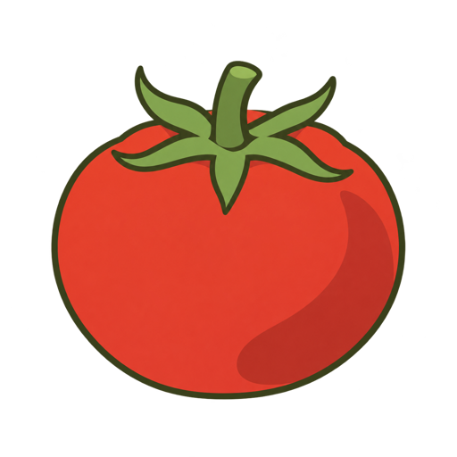
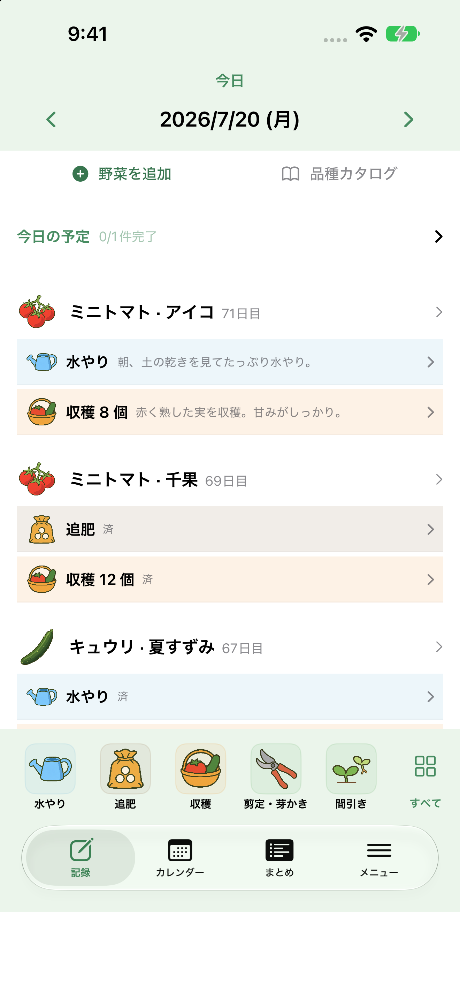
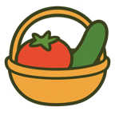
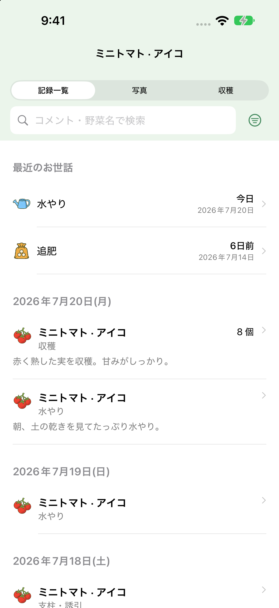
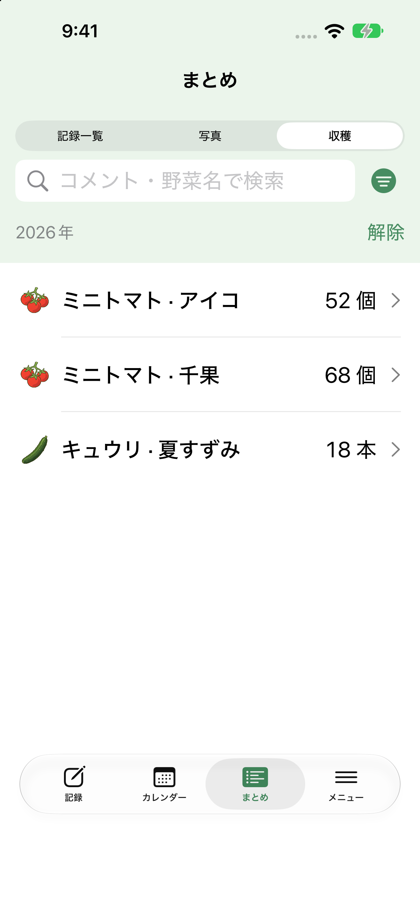
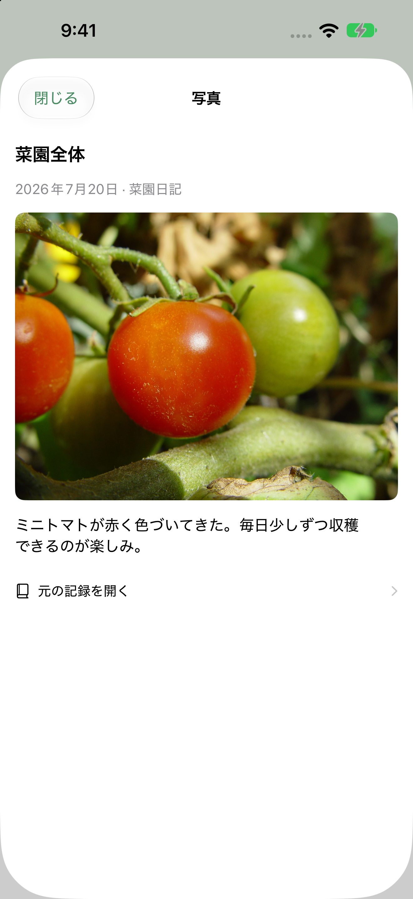
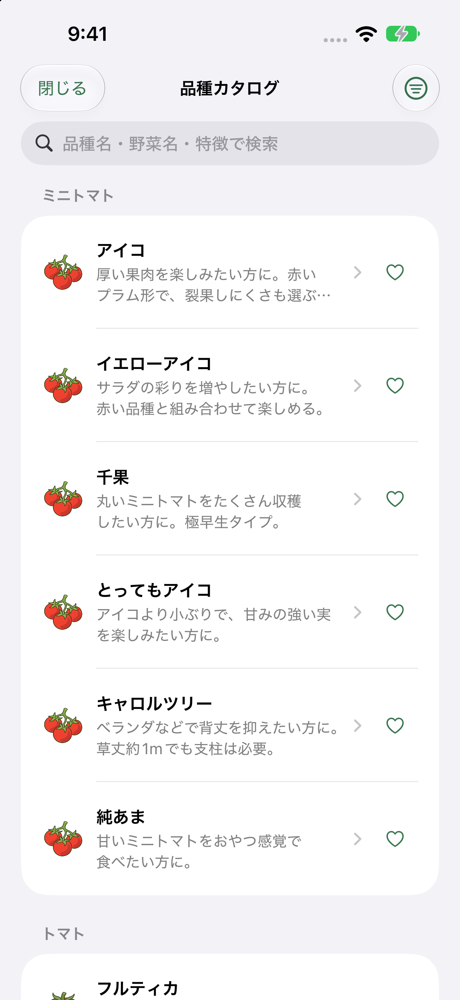

家庭菜園の記録アプリ
育てる毎日を、
ひとつの手帳に。
水やり、追肥、今日の収穫。
小さな変化を残して、
次の栽培につなげよう。
iPhone対応 · アプリ内購入あり

ベランダの一鉢から、
畑で育てる野菜まで。


採れたうれしさも、忘れたくないひと手間も。
画面はサンプルデータです
ちょうどいい記録。
お世話を残す。／ 成長を見返す。／ 次に活かす。
毎日の記録が、役に立つ
「いつだっけ？」を、
すぐに振り返る。
お世話や収穫を、野菜ごとに。
写真と日記で、菜園の成長も。
水やりも追肥も、野菜ごとの履歴に。
前回の日付や、その日のメモを確認できます。

野菜や品種ごとに、育てた成果を振り返る。
収穫の数と、記録した重さをそれぞれ集計できます。

最初の実も、色づいた日も。
写真とメモで、育てた過程を残せます。

べじログの実際の画面 · サンプルデータ

次の季節も、楽しみに
どの品種を、
育ててみよう。
気になる品種の特徴をカタログでチェック。
お気に入りや「これから育てる」に残して、
次の菜園計画を少しずつ。
同じ野菜でも、品種や苗に名前をつけて
それぞれのお世話と収穫を記録できます。
まずは、ひとつの野菜から
今日の記録を、はじめよう。
- 01
育てている野菜を選ぶ
トマト、キュウリ、ハーブ。
名前をつけて、品種や苗を分けても。 - 02
今日のお世話を残す
水やりや追肥、収穫を記録。
写真とメモは、残したいときに。 - 03
気になったら、見返す
前回のお世話や収穫の合計を確認。
次のお世話は予定にしておけます。
| 使える範囲 | 無料版 | プレミアム |
|---|---|---|
| 年ごとの栽培登録 | 10個 | 1,000個 |
| 名前をつけて 管理する野菜 | 10個 | 1,000個 |
| 写真から作る アイコン | 1個 | 12個 |
| 広告 | あり | なし |
2つの野菜登録枠は別々の上限です。写真アイコンの上限は、日記や記録に添付する写真の枚数を指すものではありません。
プレミアムは任意の月払い・年払いの自動更新サブスクリプションです。料金・期間はアプリ内の購入画面でご確認ください。
使いはじめる前に
よくある質問
ベランダ菜園でも使えますか？
はい。一鉢からでも、育てている野菜のお世話や収穫を記録できます。野菜や品種ごとに名前をつけて管理することもできます。
収穫は重さでも記録できますか？
はい。数だけ、重さだけ、両方の記録に対応しています。数は個・本・さや・束・枚・株から選択でき、重さはgまたはkgで入力できます。まとめでは同じ単位の数と、入力した重さをそれぞれ集計します。
水やりや追肥の予定も残せますか？
カレンダーで予定を管理できます。繰り返しの予定や通知も設定でき、日々のお世話に役立てられます。
どの端末で使えますか？
iPhone向けのアプリです。対応するOSなど、最新の動作条件はApp Storeの「互換性」でご確認ください。